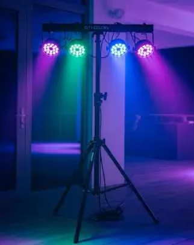
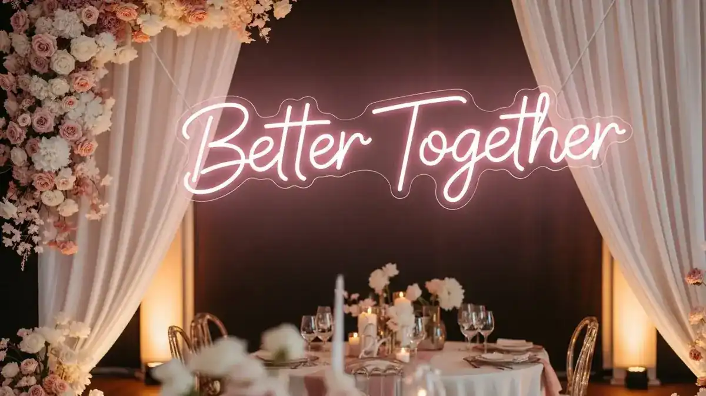
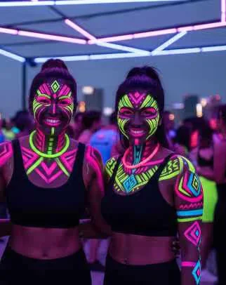
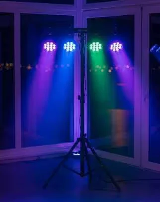

Transforma tu evento con iluminación LED arquitectónica, creando una atmósfera inolvidable en tu XV años.
Una noche de ensueño estaba a punto de suceder en el corazón de Polanco, donde el Salón Versalles se preparaba para recibir a una quinceañera y sus invitados. No era cualquier fiesta; era una celebración que prometía ser recordada por su elegancia y sofisticación. La madre de la quinceañera, Alejandra, quería algo que hiciera que la noche brillara tanto como su hija.
Desde el primer momento, Alejandra sabía que la iluminación jugaría un papel crucial. Después de buscar por toda la Ciudad de México, encontró a REDEIL, una empresa con más de 30 años de experiencia en la iluminación de eventos. La promesa de transformar el espacio con luces LED fue la chispa que encendió su decisión.
La historia que estás a punto de leer te llevará a través de un viaje luminoso. Aprenderás cómo la iluminación adecuada puede cambiar por completo la atmósfera de un evento y cómo el equipo de REDEIL hizo realidad este sueño.
Prepárate para sumergirte en los detalles técnicos y emocionales de una noche donde las luces no solo iluminaron un salón, sino también los corazones de todos los presentes.
La llamada que lo cambió todo
Era una tarde de verano cuando Alejandra, la madre de la quinceañera, decidió que necesitaba algo único para el evento de su hija. "Quiero que cuando los invitados entren, sientan que han entrado a un mundo mágico", comentó al equipo de REDEIL durante su primera llamada telefónica.
La inquietud de Alejandra era clara: había visitado varios salones, pero ninguno ofrecía la capacidad de transformar el ambiente con la luz. Fue entonces cuando el equipo de REDEIL le propuso una solución que combinaba la elegancia clásica del Salón Versalles con una iluminación neon de última generación.
"¿Cómo pueden las luces cambiar tanto un lugar?", preguntó Alejandra intrigada. La respuesta fue simple pero emocionante: mediante el uso de uplighting neon arquitectónico, cada pared del salón podría transformarse en un lienzo de color, creando un ambiente envolvente y sorprendente.
La propuesta inicial
El equipo de REDEIL sugirió un diseño que incluía luces LED RGBW distribuidas estratégicamente para resaltar los candelabros, la pista de cristal, y la mesa de regalos. El objetivo era crear una experiencia inmersiva que destacara cada detalle del salón.
Alejandra estaba emocionada y al mismo tiempo ansiosa. El equipo le aseguró: "Confía en nosotros, tu visión se hará realidad". Con esa promesa, la planificación detallada comenzó.
Eventos iluminados
REDEIL ha iluminado más de 15,000 eventos, ofreciendo experiencias únicas en CDMX y alrededores.
Planificación detallada del evento
La planificación del evento fue un proceso meticuloso que involucró varias reuniones y visitas al lugar. Cada elemento de la iluminación fue cuidadosamente seleccionado para complementar la arquitectura del Salón Versalles. El equipo de REDEIL trabajó codo a codo con Alejandra para asegurarse de que cada detalle cumpliera con sus expectativas.
La primera reunión in situ en el salón permitió al equipo evaluar el espacio. Los techos altos y los majestuosos candelabros ofrecían una oportunidad única para crear efectos de luz dramáticos. "Queremos que la luz baile con la música", explicó el líder del equipo técnico, sugiriendo el uso de control DMX512 para sincronizar las luces con el ritmo de la música.
Se discutieron diferentes escenarios, desde un resplandor cálido y acogedor para la cena, hasta explosiones de color durante los momentos de baile. Se planeó la instalación de luces LED con diferentes temperaturas de color, desde los 3200K cálidos hasta los 6500K fríos, para ajustar la atmósfera según el momento de la noche.
La logística también fue un aspecto clave. Se consideraron los requerimientos de energía, el tiempo de instalación y desmontaje, asegurando que todo transcurriera sin contratiempos el día del evento. La experiencia de REDEIL en más de 15,000 eventos fue evidente en su enfoque detallado y profesional.
Elige luces LED de calidad
Las luces LED de calidad ofrecen un rendimiento superior y una eficiencia energética que garantiza un evento exitoso.
Aspectos técnicos de la iluminación LED
La tecnología detrás de la iluminación LED utilizada en el evento de Alejandra fue tan impresionante como el espectáculo en sí. Los cañones LED RGBW de cuatro canales permitieron un bañado de colores vibrantes en las paredes, transformando el ambiente del salón.
- Control DMX512: Este sistema permitió programar escenas y sincronizar las luces con la música para crear un espectáculo visual impresionante.
- Modo audio-reactivo: Las luces respondían a los ritmos musicales, haciendo que cada canción se sintiera como una experiencia única.
- Luces UV 395nm: Estas luces crearon un efecto de resplandor en materiales fluorescentes, añadiendo un toque mágico a la pista de baile.
- Ángulos de haz: Se usaron diferentes ángulos de haz, desde spots estrechos para iluminar detalles específicos, hasta wash amplios para un bañado completo de las paredes.
- Potencia y cobertura: Cada unidad de luz cubría amplias áreas, maximizando el impacto visual con un consumo de energía eficiente.
- Especificaciones de instalación: Se planificó el cableado y la distribución eléctrica para asegurar que todo el equipo funcionara sin interrupciones.
- Consejos de expertos: La experiencia de REDEIL garantizó que cada elemento técnico se ajustara de forma precisa a las necesidades del evento.
- Costos y presupuestos: Se presentaron opciones que se ajustaban al presupuesto de Alejandra, sin comprometer la calidad del espectáculo.
La combinación de tecnología avanzada y ejecución experta aseguró que la iluminación fuera un elemento central en la atmósfera del evento.
Años de experiencia
Con más de 30 años en la industria, REDEIL es un líder en iluminación profesional para eventos.
Beneficios de la iluminación arquitectónica
La iluminación arquitectónica utilizada en el evento de XV años de Alejandra no solo embelleció el espacio, sino que también aportó múltiples beneficios que superaron las expectativas de todos los presentes. Aquí te presentamos algunos de los beneficios más destacados:
- Ambiente personalizado: La capacidad de cambiar los colores y la intensidad de la luz permitió crear diferentes atmósferas a lo largo de la noche.
- Detalles resaltados: Los candelabros y la pista de cristal brillaron con una nueva vida bajo el resplandor de las luces LED.
- Fotografía mejorada: La iluminación adecuada realzó las fotografías, asegurando que cada momento fuera capturado con la mejor calidad visual.
- Flexibilidad de programación: Con el control DMX512, las luces se adaptaron a cada segmento del evento, desde la ceremonia hasta la fiesta.
- Impacto visual: Los colores vibrantes y los efectos dinámicos sorprendieron a los invitados, creando una experiencia visual inolvidable.
- Eficiencia energética: A pesar de la magnitud del espectáculo, el consumo de energía fue mínimo gracias a la tecnología LED.
- Seguridad: La instalación profesional y el equipo de alta calidad aseguraron un ambiente seguro para todos los invitados.
- Versatilidad: La iluminación arquitectónica se adaptó perfectamente a la arquitectura del Salón Versalles, destacando su elegancia natural.
- Memorable: La combinación de luces y música dejó una impresión duradera en todos los asistentes.
- Valor añadido: La experiencia visual enriqueció el evento, agregando un elemento sorpresa que encantó a todos.
Estos beneficios hicieron que la inversión en iluminación arquitectónica fuera una decisión acertada para Alejandra y su familia.
Sincroniza luces y música
El uso de control DMX512 permite sincronizar las luces con la música, creando una experiencia inmersiva para los invitados.
Consejos para un evento perfecto
Organizar un evento tan importante como un XV años puede ser desafiante, pero con los consejos adecuados, es posible crear una celebración inolvidable. Aquí te dejamos algunos consejos valiosos para asegurar que tu evento sea un éxito:
- Planificación anticipada: Comienza a planificar tu evento con al menos seis meses de anticipación para asegurar disponibilidad de proveedores y servicios.
- Define tu presupuesto: Tener claro cuánto estás dispuesto a gastar te ayudará a tomar decisiones más informadas y evitar gastos innecesarios.
- Contrata profesionales: Trabajar con expertos en iluminación, como REDEIL, garantiza una ejecución impecable y resultados visuales extraordinarios.
- Personaliza tu evento: Asegúrate de que cada elemento del evento refleje la personalidad y los gustos de la quinceañera, desde la decoración hasta la música.
- Prueba de iluminación: Programa una prueba de iluminación antes del evento para asegurarte de que todos los efectos funcionan como esperas.
- Comunicación constante: Mantén una comunicación abierta y constante con todos los proveedores para coordinar cada detalle del evento.
- Plan B: Siempre ten un plan alternativo para cualquier imprevisto que pueda surgir, especialmente en eventos al aire libre.
- Cuidado con los detalles: Pequeños detalles, como la colocación de la mesa de regalos o la distribución de las luces, pueden marcar una gran diferencia.
- Relájate y disfruta: El día del evento, relájate y disfruta, sabiendo que has hecho todo lo posible para crear una noche mágica.
Siguiendo estos consejos, estarás en camino de organizar un evento memorable y exitoso.
Contenido adicional valioso
Además de la iluminación espectacular, hay otros elementos que pueden complementar tu evento de XV años y hacerlo aún más especial. Aquí te ofrecemos algunas ideas adicionales para considerar:
- Fotografía y video profesional: Capturar cada momento con calidad profesional te permitirá revivir el evento una y otra vez.
- Temática personalizada: Introducir una temática única puede dar un toque especial y cohesivo a la celebración.
- Entretenimiento en vivo: Considera incluir música en vivo o un DJ que pueda interactuar con los invitados y mantener la energía alta.
- Estaciones interactivas: Ofrece experiencias interactivas como una cabina de fotos o estaciones de comida personalizadas para deleitar a tus invitados.
- Decoración floral: Las flores frescas pueden añadir un toque de elegancia y color a cada rincón del salón.
- Regalos personalizados para invitados: Agradece a tus invitados con pequeños obsequios personalizados que puedan llevarse a casa.
- Experiencia gastronómica: Ofrecer un menú variado y de alta calidad es crucial para el disfrute de todos los asistentes.
- Coordinador de eventos: Contratar un coordinador de eventos puede aliviar el estrés y asegurar que todo transcurra sin problemas.
- Espacios para redes sociales: Crea zonas donde los invitados puedan tomar fotos y compartirlas en redes sociales, aumentando el alcance de tu evento.
- Detalles de bienvenida: Recibir a tus invitados con un cóctel de bienvenida o un detalle especial puede hacerlos sentir valorados desde el primer momento.
- Iluminación de exteriores: Si el evento incluye áreas al aire libre, asegura una iluminación adecuada para mantener la atmósfera mágica en todo el espacio.
Estos elementos adicionales pueden elevar tu evento de XV años, haciendo que todos los asistentes se lleven un recuerdo inolvidable.
Reflexiones finales y próximos pasos
El evento de Alejandra fue un éxito rotundo, y la iluminación jugó un papel crucial en la creación de una experiencia inolvidable. Desde la primera llamada hasta el último aplauso, REDEIL demostró ser un aliado confiable en la realización de sueños.
Para quienes están considerando organizar un evento similar, el camino hacia una celebración mágica comienza con la elección de los socios adecuados. La experiencia, el profesionalismo y la pasión por la luz pueden transformar cualquier espacio en un escenario de cuento de hadas.
Si estás planeando un evento en el futuro, considera contactar a REDEIL para una consulta personalizada. Con su experiencia en más de 15,000 eventos, puedes estar seguro de que cada detalle será cuidado con esmero.
Enciende tus sueños y deja que la luz guíe tu celebración hacia un horizonte de posibilidades. Llama al 55 3068 2988 y descubre cómo la magia de la luz puede iluminar tus momentos más preciados.
Beneficios de la iluminación LED
- Eficiencia energética: Las luces LED consumen menos energía, reduciendo costos y siendo amigables con el medio ambiente.
- Versatilidad de color: La tecnología RGBW permite cambiar entre millones de colores, adaptándose a cualquier temática.
- Durabilidad: Las luces LED son más duraderas, ofreciendo un rendimiento confiable durante todo el evento.
- Menor producción de calor: La baja producción de calor de las luces LED mejora la seguridad y el confort de los invitados.
- Control preciso: El DMX512 permite un control preciso y programable de la iluminación, ajustándose a cada momento del evento.
Galeria: Uplighting Neon Arquitectonico




Preguntas Frecuentes sobre Uplighting Neon Arquitectonico
Considera la temática del evento, el espacio disponible y consulta con expertos en iluminación para seleccionar las luces que mejor se adapten a tus necesidades.
Ofrece eficiencia energética, versatilidad de colores, menor producción de calor, y una mayor vida útil, además de ser fácilmente controlable.
El tiempo de instalación puede variar según la complejidad del diseño, pero generalmente se realiza en unas pocas horas con un equipo profesional.
Sí, con el control DMX512 y luces RGBW, es posible personalizar y ajustar los efectos de luz en tiempo real según el desarrollo del evento.
Una buena iluminación realza las fotos, asegurando que cada momento sea capturado con claridad y belleza, mejorando el resultado final de las fotografías.
Cotiza tu Uplighting Neon Arquitectonico Hoy
Transforma tu evento con iluminacion neon profesional. Respondemos en menos de 2 horas.
Cotizar por WhatsApp